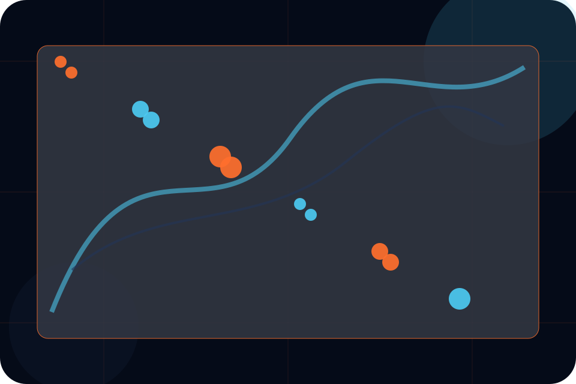
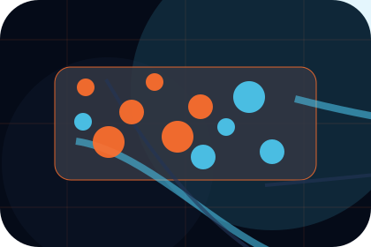
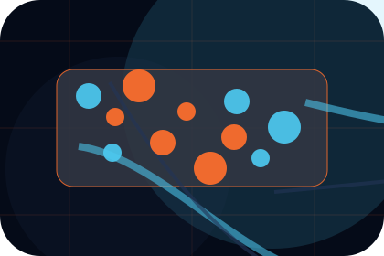
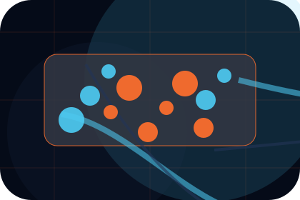
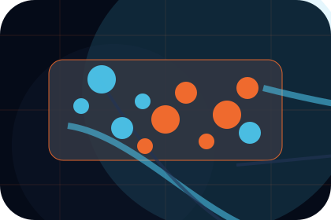
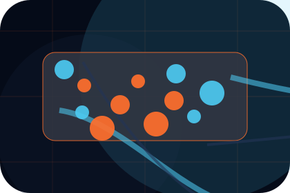
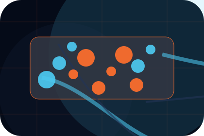
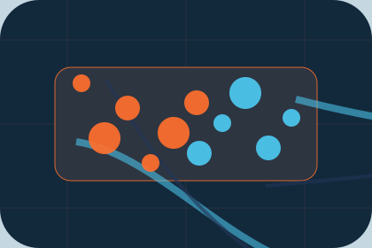

Evidence
Visible proof that helps visitors believe the claims behind authorities.
Compliance / 01
Compliance opens as a clear aviation decision hub: what Aero offers, who it helps, why it matters, and which route to take first.
The first screen combines positioning, proof, primary action, and fast internal navigation, so people can act immediately or compare the rest of the compliance route with context.
Aerospace velocity hero
Select the closest route and Aero keeps the next step, proof, and follow-up expectation aligned with safety and premium reliability.

Compliance / 03
Documents gives the proof layer for compliance: standards, evidence, and reassurance that make the next decision feel grounded.
Instead of relying on vague claims, Aero presents visible standards, process cues, and proof artifacts that help aviation visitors judge fit.
Explore Compliance
Visible proof that helps visitors believe the claims behind documents.

The quality, safety, or operating expectation this section makes explicit.

What becomes clearer before someone decides whether to request a charter.
Compliance / 04
Audits explains the operating sequence so visitors can see how the first request becomes a clear recommendation and follow-up.
The steps are written from the visitor side: what they do first, what Aero clarifies, what they receive, and how support continues.
Explore ComplianceHow visitors begin this route and what detail is useful at the first step.
What Aero reviews, filters, or explains before recommending the next move.

What the visitor receives afterward, including support, proof, or a handoff to the next page.
Compliance / 05
Records gives the proof layer for compliance: standards, evidence, and reassurance that make the next decision feel grounded.
Instead of relying on vague claims, Aero presents visible standards, process cues, and proof artifacts that help aviation visitors judge fit.
Explore ComplianceVisible proof that helps visitors believe the claims behind records.
The quality, safety, or operating expectation this section makes explicit.
What becomes clearer before someone decides whether to request a charter.
Compliance / 06
Standards gives the proof layer for compliance: standards, evidence, and reassurance that make the next decision feel grounded.
Instead of relying on vague claims, Aero presents visible standards, process cues, and proof artifacts that help aviation visitors judge fit.
Explore ComplianceAero structures standards around evidence, standard, and a clear next route so visitors can compare the block quickly before they request a charter.
Request CharterCompliance / 07
Approvals gives the proof layer for compliance: standards, evidence, and reassurance that make the next decision feel grounded.
Instead of relying on vague claims, Aero presents visible standards, process cues, and proof artifacts that help aviation visitors judge fit.
Explore ComplianceVisible proof that helps visitors believe the claims behind approvals.

The quality, safety, or operating expectation this section makes explicit.

What becomes clearer before someone decides whether to request a charter.
Compliance / 08
Governance gives the proof layer for compliance: standards, evidence, and reassurance that make the next decision feel grounded.
Instead of relying on vague claims, Aero presents visible standards, process cues, and proof artifacts that help aviation visitors judge fit.
Explore ComplianceVisible proof that helps visitors believe the claims behind governance.
Compliance / 09
Evidence gives the proof layer for compliance: standards, evidence, and reassurance that make the next decision feel grounded.
Instead of relying on vague claims, Aero presents visible standards, process cues, and proof artifacts that help aviation visitors judge fit.
Explore ComplianceVisible proof that helps visitors believe the claims behind evidence.
The quality, safety, or operating expectation this section makes explicit.
What becomes clearer before someone decides whether to request a charter.
Compliance / 10
Aero closes the compliance route with a clear action, a quick reminder of the value, and a low-friction way to request a charter.
Visitors who are ready can use the primary action. Visitors who are still comparing can scan the section links, proof, and support routes before they request a charter.
Request CharterThe final block keeps the choice simple: act now, compare one more proof route, or send enough detail for a focused response.
Request Chartersafety and premium reliability
An aviation site with speed-led hero, aircraft spec cards, route modules, safety proof, and charter enquiry. Compliance ends with a direct path to request a charter, plus enough context for visitors who still need to compare.

Request CharterInformation is provided for planning and should be reviewed for the final client, location, and operating rules.